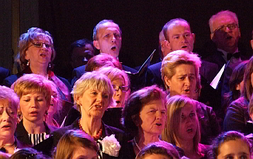

A tymczasem w Cameracie...
.
2012-01-21
W programie:• Koncert kolęd w wykonaniu chórów i zespołów z Wieliczki. Dyryguje Piotr Piwko.
(Chór im. Jana Pawła, Lutnia, Camerata, Ziarenko, Klemenciaki, Yanabanda)
- Wśród nocnej ciszy
- Gdy się Chrystus rodzi
- Bracia, patrzcie jeno
- Pójdźmy wszyscy do stajenki
- Tryumfy Króla Niebieskiego
- W Betlejem przy drodze
- Dzisiaj w Betlejem
- Hej, w Dzień Narodzenia
- Hola, hola pasterze z pola
- W Dzień Bożego Narodzenia
- Hej, ponad regle
- O, Józefie
- Ciesz się, wesel Betlejem
- Przybieżeli do Betlejem
• Koncert Renaty Przemyk AKUSTIK TRIO
• Występ Orkiestry Dętej z Podstolic
• Zabawa karnawałowa z zespołem SOKÓŁ ORKESTAR
Spotykamy się o 15:50 i zaczynamy próbę. Krótka rozśpiewka, no i oczywiście mikrofony, nagłośnienie, światła. Nam to nie przeszkadza, robimy swoje, czyli zaczynamy śpiewać. Parę kolęd i przerwa do 18:00.

A to kto... Może przyszły chórzysta lub chórzystka nam rośnie?
Kończy się koncert chórów. Podziękowanie dla pana dyrygenta i kończymy występ.
Jutro spotykamy się rano na mszy.Zobacz_koncert_galeria

© Stowarzyszenie Muzyczne Chór Camerata Wieliczka